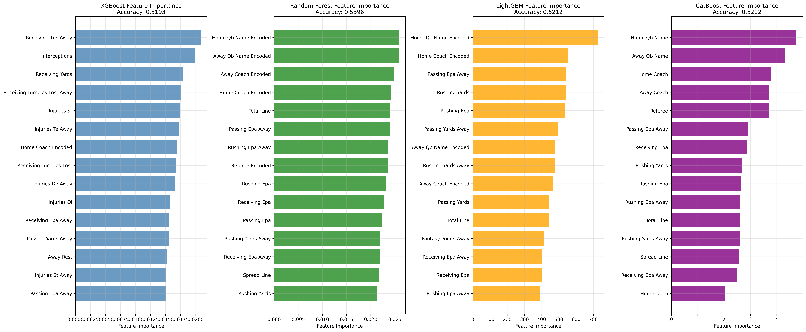
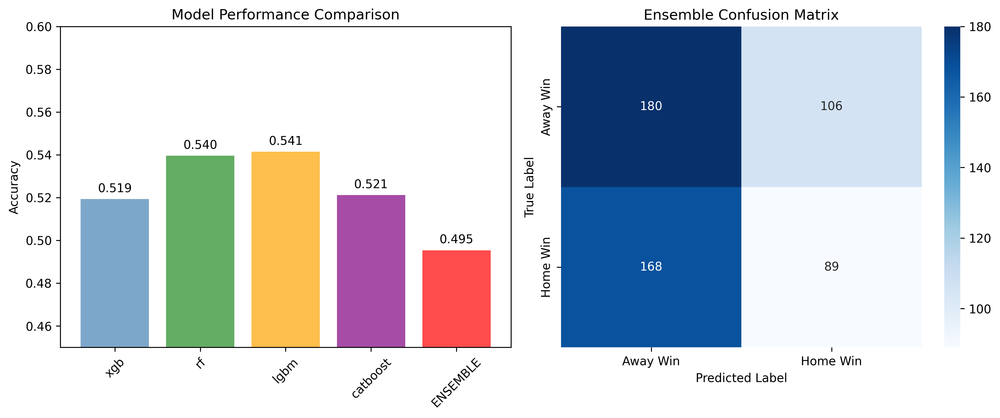
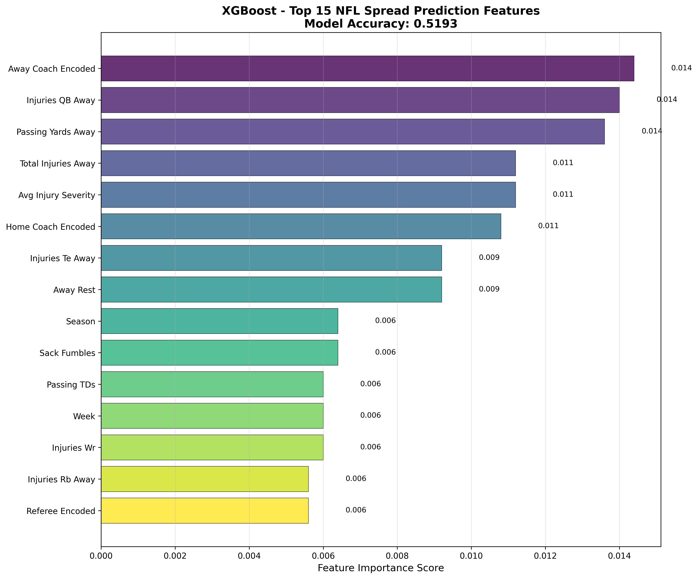

A machine learning system that predicts whether the home team will cover
the NFL betting spread, using 25+ years of historical data,
78+ engineered features, ensemble modeling, and SHAP-based explainability.
Trained with chronological validation (1999–2021 train, 2022–2023+ test)
to prevent data leakage.
Chronological Validation Accuracy53.96%
Above the ~52.4% breakeven needed to beat the standard −110 vig in
NFL spread betting markets.
Result Graphs

Model Comparison. Side-by-side accuracy of the
individual gradient-boosting and tree-based models (XGBoost, LightGBM,
CatBoost, Random Forest) evaluated on the held-out chronological test
set. This visualizes how each base learner performs on its own before
being combined into the final ensemble.

Ensemble Results. Performance of the final ensemble
that combines the four base models. The ensemble reaches
53.96% accuracy on chronological validation, beating
each of the individual models and demonstrating the value of model
diversity for spread prediction.

Top 15 SHAP Features (XGBoost). SHAP explainability
plot showing the 15 features with the largest impact on XGBoost's
spread predictions. Each point is a game; horizontal position shows
how much that feature pushed the prediction toward "home cover" or
"home no cover", and color encodes the feature's value. This reveals
which signals — betting market context, rolling team performance,
injuries, rest, etc. — actually drive the model.